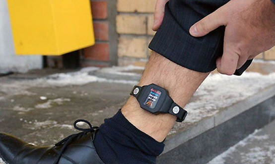

Ограничение свободы
ЦИТАТА
Ограничение свободы (ст. 53 УК РФ) – это установление для осужденного ряда ограничений при отсутствии изоляции от общества.
Признаки ограничения свободы:
а) состоит в установлении судом следующих ограничений и обязанностей:
- не уходить из места постоянного проживания (пребывания) в определенное время суток,
- не посещать определенные места, расположенные в пределах территории соответствующего муниципального образования,
- не выезжать за пределы территории соответствующего муниципального образования,
- не посещать места проведения массовых и иных мероприятий и не участвовать в указанных мероприятиях,
- не изменять место жительства или пребывания, место работы и (или) учебы без согласия специализированного государственного органа,
- являться в специализированный государственный орган, осуществляющий надзор за отбыванием осужденными наказания в виде ограничения свободы, от одного до четырех раз в месяц для регистрации;
б) может применяться и как основное, и как дополнительное наказание;
в) суд по представлению специализированного государственного органа, осуществляющего надзор за отбыванием осужденными наказания в виде ограничения свободы, может отменить частично либо дополнить ранее установленные осужденному ограничения.
Сроки ограничения свободы – от двух месяцев до четырех лет в качестве основного вида наказания за преступления небольшой тяжести и преступления средней тяжести, а также на срок от шести месяцев до двух лет в качестве дополнительного вида наказания к принудительным работам или лишению свободы.
В случае злостного уклонения осужденного от отбывания ограничения свободы, назначенного в качестве основного вида наказания, суд по представлению специализированного государственного органа, осуществляющего надзор за отбыванием осужденными наказания в виде ограничения свободы, может заменить неотбытую часть наказания принудительными работами или лишением свободы из расчета один день принудительных работ за два дня ограничения свободы или один день лишения свободы за два дня ограничения свободы.
Ограничение свободы не назначается:
- военнослужащим,
- иностранным гражданам, лицам без гражданства, а также лицам, не имеющим места постоянного проживания на территории РФ.
Арест
ЦИТАТА
Арест (ст. 54 УК РФ) – это краткосрочное содержание осужденного в условиях строгой изоляции от общества.
Признаки ареста:
а) подразумевает изоляцию от общества;
б) краткосрочность (в сравнении с лишением свободы);
в) должен отбываться в арестных домах (военнослужащие отбывают арест на гауптвахте). В связи с отсутствием инфраструктуры арестных домов данный вид наказания на практике не применяется.
Сроки ареста – от одного до шести месяцев. В случае замены обязательных работ или исправительных работ арестом он может быть назначен на срок менее одного месяца.
Арест не назначается:
- несовершеннолетним,
- беременным женщинам и женщинам, имеющим детей в возрасте до четырнадцати лет.